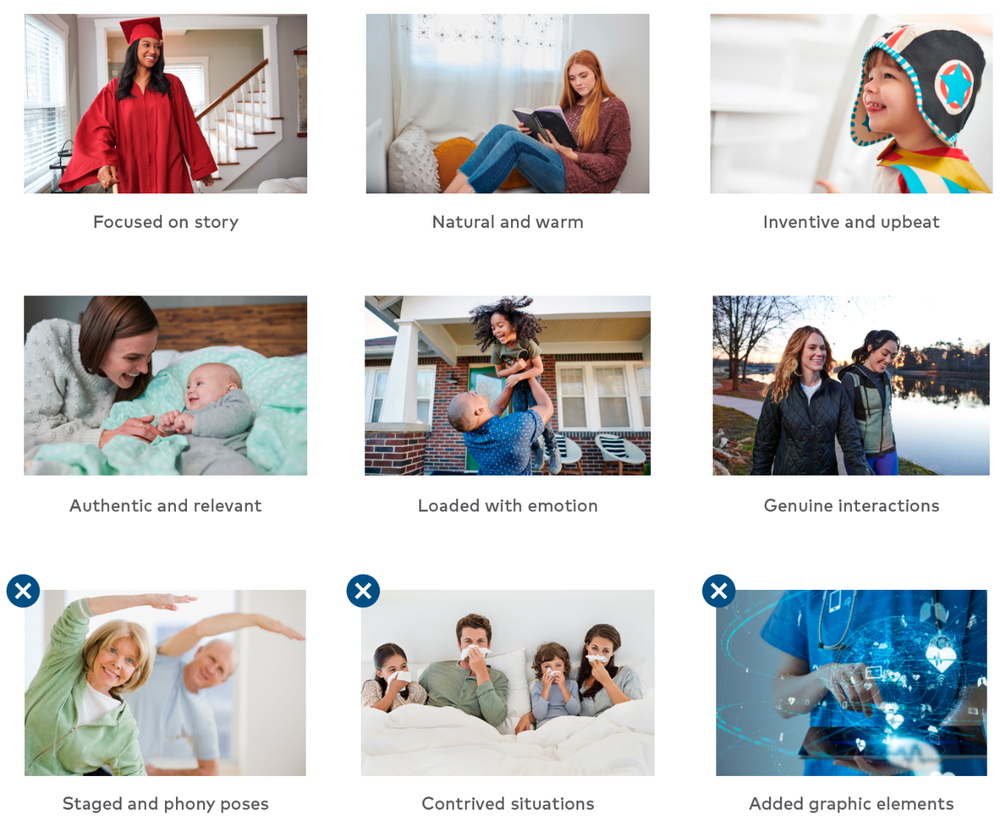

Photos
Photography is one of our most widely used and influential brand assets. It’s essential that all photos, whether stock or custom, meet our brand style and standards. With an emphasis on lifestyle imagery, photos should be expressive, warm, story-driven and authentic, reflecting our commitment to the whole health of the individual, in our facilities and in their lives.
Photographs should persuasively convey the message it’s supporting, while representing the diversity of both our patients and our colleagues.
Lifestyle Photos
Examples that meet our brand standards for lifestyle photos
Representative photographs should feel natural and authentic, capturing real moments. They should have a clear focal point, with warm tones and evident emotions.
Examples that do not meet our brand standards for lifestyle photos
Representative photographs should not be artificially staged, be dramatically sterile or contain added graphical elements.
Clinical Photos
Examples that meet our brand standards for clinical photos
Representative photographs should focus less on the technical elements of healthcare and more on the human interactions. They too should be warm, authentic, driven by story and filled with emotion and meaning.
Examples that do not meet our brand standards for clinical photos
Also, representative photographs should not be overly posed or
contrived and should not contain added graphics. Clinical
photographs must avoid medically inappropriate elements, such as
colleagues having stethoscopes around the neck or not being bare
below the elbows in surgical situations. Note: When in doubt about
the accuracy of clinical photos, consult with an
HCA Healthcare-employed clinician.